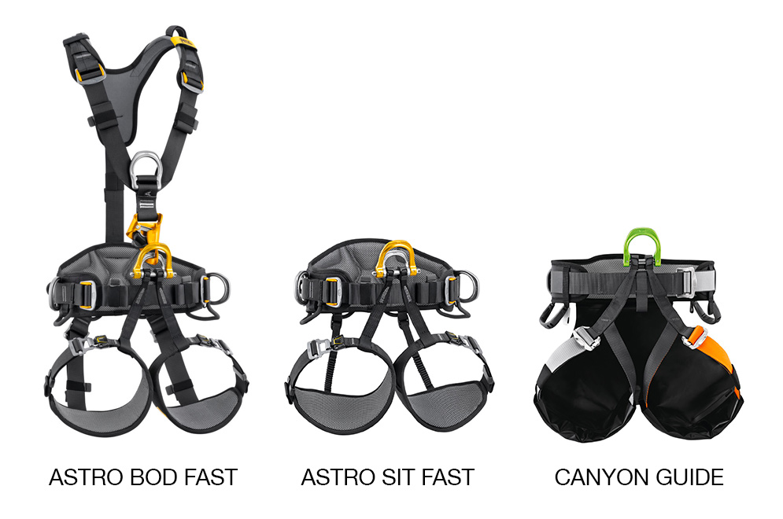

IRATA
Nuova imbracatura Petzl ASTRO®
Una gamma completa per soddisfare le esigenze di tutti i cordisti
Comfort e praticità sono le parole chiave per descrivere ASTRO®: questa imbracatura è la soluzione ideale per affrontare tutte le situazioni di lavoro ed è perfetta per garantire il massimo comfort anche nelle sospensioni prolungate grazie ai due sedili ora associati a questa gamma.
Qual è la miglior imbracatura per i cordisti?
Di certo tra le più amate e performanti nell'universo Petzl c'è ASTRO® che si presenta quest'anno rinnovata con novità che la rendono ancora più facile da indossare e comoda da utilizzare anche nelle situazioni lavorative più impegnative.
La gamma ASTRO® è la soluzione ideale per tutti i professionisti il cui lavoro quotidiano prevede continui spostamenti su fune, sia in discesa che in salita.
Inoltre, per garantire il massimo comfort di lavoro nelle sospensioni, ci sono due i sedili associati alla gamma, ovvero PODIUM e LITEPOD. Chi trascorre le giornate sospeso in ambiente verticale sa quanto sia importante avere un sedile efficace!

Le novità della gamma ASTRO®
Ma vediamo nel dettaglio le novità: tutte le zone di contatto, bretelle, cintura e cosciali, sono dotate di imbottitura 3D traspirante per un maggiore comfort in sospensione e durante tutte le fasi di lavoro.
La cintura e i cosciali semirigidi garantiscono una perfetta vestibilità e tenuta dell'imbracatura al corpo dell'utilizzatore.
Il punto ventrale apribile dell'imbracatura consente l'integrazione ottimale dei dispositivi di progressione su fune e di un sedile.
La cintura è dotata di due punti di attacco metallici per il collegamento di un cordino di posizionamento doppio. I sette portamateriali consentono l'installazione e l'organizzazione di tutto il necessario per una giornata di lavoro.
Le bretelle sono dotate, a sinistra, di una fibbia apribile FAST per facilitare la vestizione e la rimozione dell'imbracatura e, a destra, di una fibbia autobloccante DOUBLEBACK, con sistema antiscorrimento, per una regolazione semplice e stabile.
I cosciali sono dotati di fibbie apribili FAST che consentono di indossarli, aprirli e chiuderli, senza perdere la regolazione, anche con i guanti.
La cintura è dotata di fibbie autobloccanti DOUBLEBACK per una regolazione semplice e rapida.
ASTRO® è una gamma di tre modelli con relativi accessori, disponibile in versione europea, internazionale e SIT, è dotata, nella versione internazionale, di un sistema per riporre i connettori del cordino anticaduta sulle bretelle, in modo che l'utilizzatore non sia ostacolato dal cordino e possa avere i connettori a portata di mano (accessorio per la versione europea).